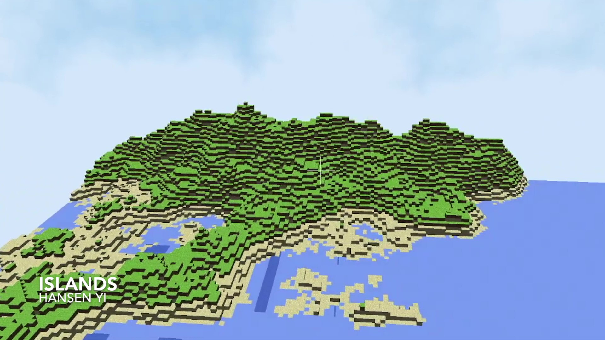

2022
2021
Mini Minecraft
As a group of three, Cindy Xu, Debby Lin, and I created a playable version of Minecraft using C++ and OpenGL. What I did specifically was utilized noise functions to generate procedural terrains, and created post-processing shaders using the OpenGL Pipeline.
Mini Maya


We created a very rudimentary version of the Maya software that would allow us to import and edit mesh structures, in addition to loading and binding skeleton joints to the meshes.
Shader Fun

A CIS 460 project where we programmed portions of OpenGL's pipeline by writing different vertex and fragment shaders to apply to the surfaces of given 3D models.

J Compiler

In this project for CIS240, we were given the task of creating a compiler for a "new" stack-based language J. The compiler is executed through the command line where it takes in a J file and outputs an asm file.
LC4 Simulator

For this CIS240 project, we had to create a program that had the functionality of an assembly line simulator. The program takes in object files and outputs a text file with the instructions after having simulated their execution.
Tetris

A CIS120 project that utilized Java and the Swing GUI framework to construct a playable version of the game Tetris